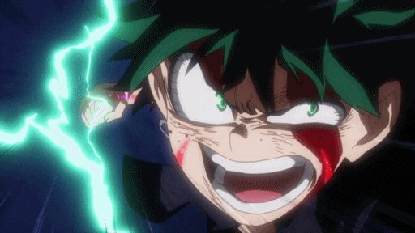
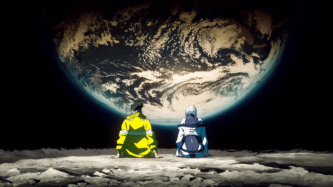
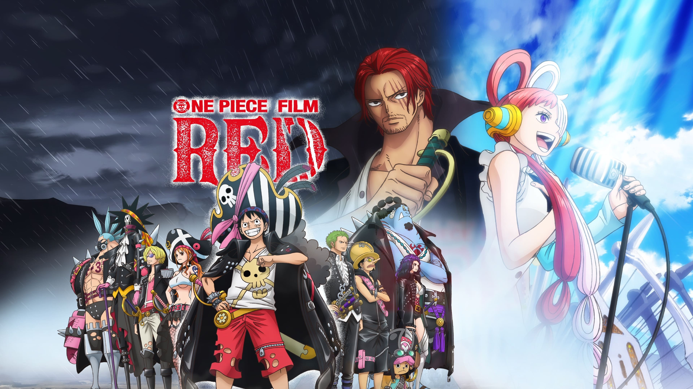
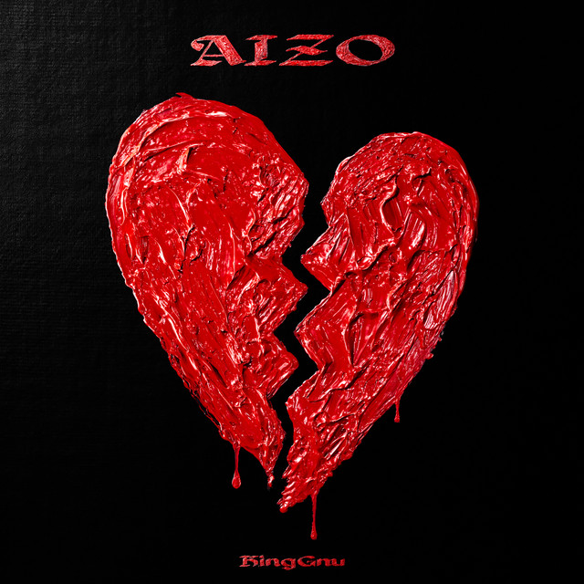
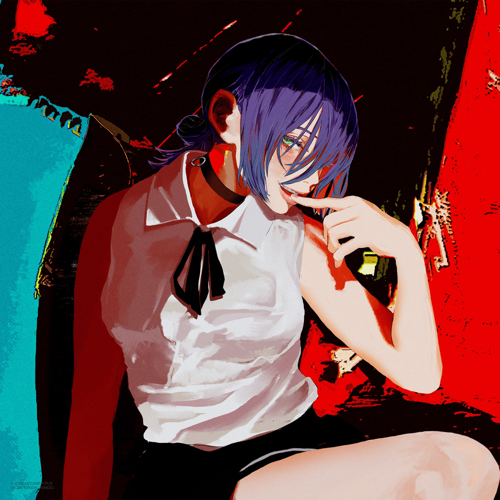
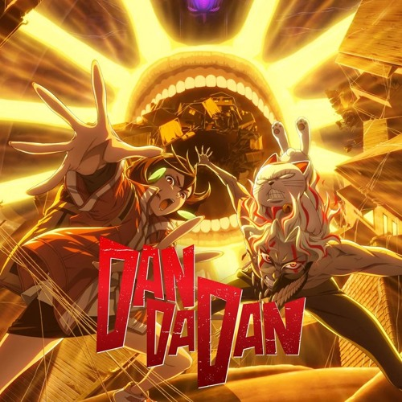
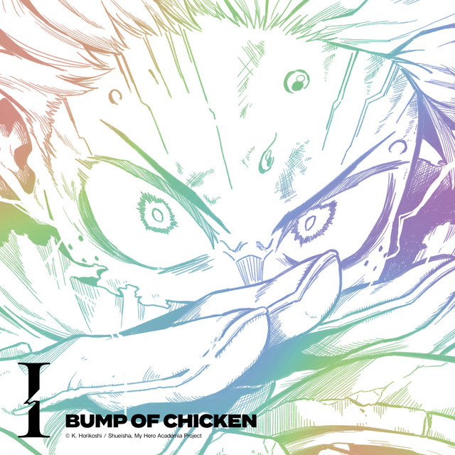
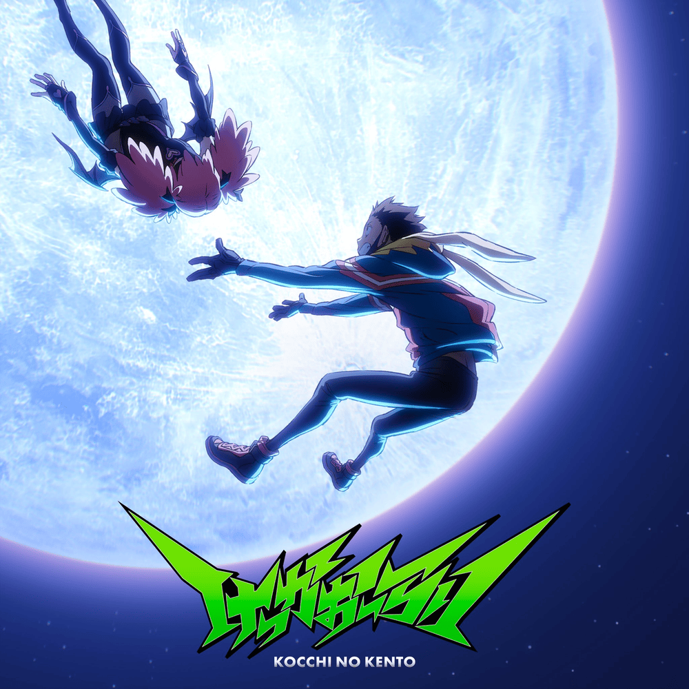

CharacterZ
YxnZx's Favorite Character of All Time
Maki Zenin (禪ぜん院いん真ま希き) is a major supporting character in Jujutsu Kaisen and one of the main protagonists of its prequel, Jujutsu Kaisen 0: Jujutsu High.
She is a second-year student at Tokyo Jujutsu High, the daughter of Ogi Zenin, and the elder twin sister of Mai Zenin. Born a non-sorcerer in one of the Big Three Families, Maki was constantly mistreated and eventually expelled herself from the clan.
Determined to become a powerful jujutsu sorcerer, she works closely with her friends Panda and Toge Inumaki while serving as a role model to first-year students.
After enduring severe burns from Jogo during the Shibuya Incident, Maki suffered immense trauma, including the death of her twin sister Mai, who sacrificed herself to turn Maki into a full "Heavenly Restriction" powerhouse akin to Toji Fushiguro.
Driven by vengeance, Maki slaughtered the entire Zenin clan, becoming a stoic, physically superior, and scarred warrior. Despite all the hardships, she continues to embody courage, perseverance, and unwavering determination, making her an inspiring character and my absolute favorite of all time.
SerieZ
YxnZx is currently Watching...
Bleach: Thousand-Year Blood War
Already Watched (Featured Series)

My Hero Academia

To Be Hero X
Gachiakuta

Cyberpunk: Edgerunners
MovieZ
YxnZx's Featured Movie of the Week

Synopsis: One Piece Film: Red follows the adventures of Luffy and the Straw Hat Pirates as they face new enemies and uncover secrets about Shanks' past. This high-energy feature combines breathtaking battles, heartfelt moments, and iconic characters in a story that will thrill both longtime fans and newcomers alike.
MusicZ
YxnZx's Featured Music of the Week





QuoteZ
YxnZx's Featured Quotes at the Moment
"No matter how hard or how impossible it is, never lose sight of your goal."
Monkey D. Luffy